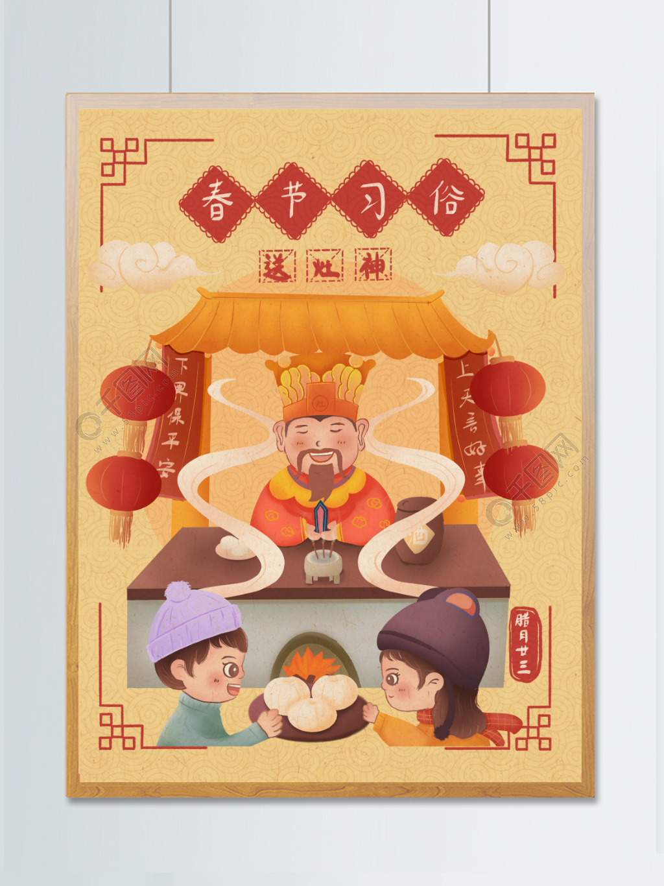
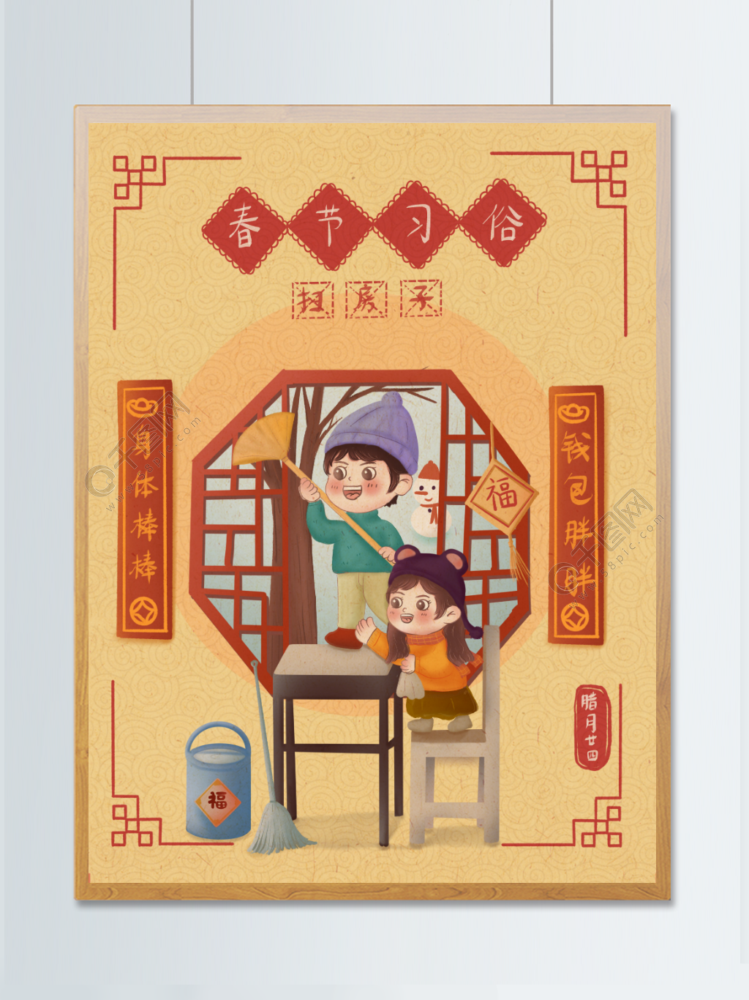
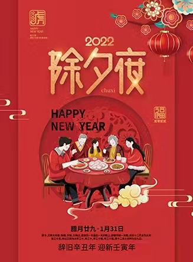
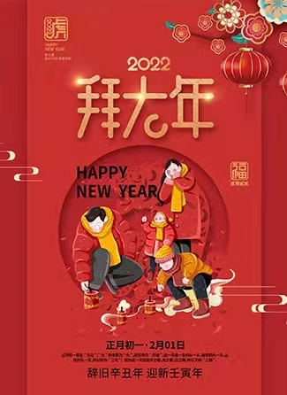
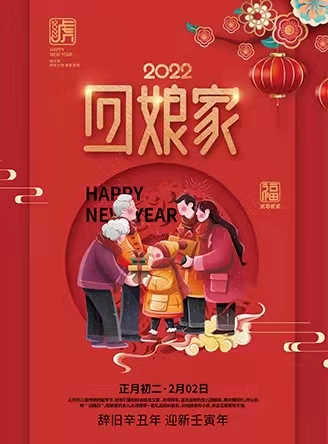
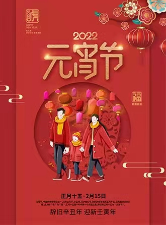

—有百样年味
腊月二十三，俗称“小年”，传说这日是“灶王爷上天”之日。
腊月二十四，掸尘扫房子，这日是约定俗成的扫除日。
大年三十，一夜连双岁，五更分二天。寒辞去冬雪，暖带入春风。
据《吕氏春秋》记载，早在尧舜时代，我国就已经有春节扫尘的习俗。因为“尘”与“陈”谐音，所以新春扫尘就赋予了新的含义，有“除陈布新”的意思，希望把一切穷运、晦气统统扫地出门。
春节祭神，是一种遍及我国东西南北的习俗。全国各地祭神习俗大同小异，但目的基本相同，都是为了祈求来年风调雨顺，五谷丰登、大吉大利等等。
祭祖一般情况下都是在祭神之后，各地风俗也不尽相同，在我们老家都是每天中午吃饭之前，各家各户派个代表，端上食物、供品去祠堂祭奠先祖，一直延续到正月十五，祠堂才会关门。
除夕守岁，也是最重要的春节活动之一，邻居朋友聚在一起，或者一家人在一起，有的打牌，有的看春节晚会，大家终日不眠，一起等待天明，迎接新年的到来。
压岁钱是小孩子和晚辈最喜欢的习俗。除夕吃过年夜饭后，长辈会向晚辈分别赠送钱币，并用红线穿编铜钱成串，挂在小孩胸前，说是能够压邪驱鬼。这个习俗自汉朝开始就已经流行，当然，现在已经没有铜钱了，一般都是拿个红包装现金了。
拜年是春节最重要的活动和习俗之一。大年初一的早上，大人小孩都穿上新衣、戴上新帽，走亲访友，相互拜年问好，恭祝新年大吉大利。拜年一般是从自家开始，小辈给长辈拜完年后，人们在外出相遇时，再笑容满面地互相恭贺新年。
龙是传说中的吉祥动物，据说能够在天上呼风唤雨，也能为人间祈福消灾。早在汉代时期，就有舞龙求雨的活动。除了舞龙，还有舞狮子，也是春节期间比较普遍的习俗，在我们北方，也叫耍狮子，小时候经常见，现在也少了。
大年初一，金鸡报晓。晚辈给长辈拜年，长辈给压岁钱，压住邪祟。
大年初二，金吠报春。亲眷人家去拜年，东家留吃饭、西家排酒筵。
正月十五，夜照田蚕（神）。观颜色判断一年的丰歉，后演化为元宵节观灯。
春节前一天的下午，小孩子们会踩着凳子，拿着糨糊和刷子，往门上贴对联，然后让下面的大人看看贴的是否端正。有的还横批，贴于门楣的横头上，对联贴在门的左右两边。还有的在屋门、墙壁、门楣上贴福字，寄托人们对幸福生活的向往。还有人会把绘有门神的画帖贴在门板上，祈求一年平安无事，增添节日喜乐气氛。
北方大部分地区，春节都有早晨吃水饺的习俗，还经常在水饺里面放一枚硬币，谁要是吃到硬币，大家就说他是全家当年最有福的人。在江苏淮安，早上有吃汤团的习俗，河南开封一带，春节这天既吃饺子又吃汤圆。春节期间还有吃年糕的习惯，年糕口味因地而异。
新春来临之际，家家户户开门第一件事，就是燃放爆竹，以噼里啪啦的爆竹声辞旧迎新，以示吉庆。当然，现在很多地方都禁止燃放爆竹了，还是应该遵守国家规定，以安全为主.
春节期间，一般在农村里都会有庙会。早期的庙会，仅仅是一种隆重的祭祀活动，但随着经济的发展和人们的需要，庙会在保持祭祀活动的同时，又逐渐增加了集市交易活动，还有一些丰富多彩的娱乐活动。
踩高跷，也是春节期间的一项娱乐活动，历史悠久，在《列子.说符篇》就有记载：“宋有兰子者……以双肢长倍其身，属其胫，并驱并驰。”踩高跷也叫“扎高脚”、“踏高跷”，表演的人在两只脚上绑上两三尺高的木质跷棍，表演各种古怪滑稽的动作，小时候基本村村都有这项活动，后来就越来越少了。